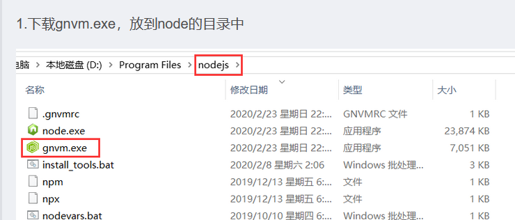

使用Gitbook editor写电子书并托管到github
使用git与github
在github新建repository
下载安装GitBash
右键运行GitBash，生成ssh密匙： ssh-keygen -t rsa -C "xxxx@xx.com"
进入.ssh文件夹，用记事本打开id_rsa.pub文件，复制所有内容
到github新建ssh密匙，随意命名密匙名称，粘贴
在GitBash运行 ssh -T git@github.com，输入yes确认
运行 git config --global user.name "XXXgit_nameXX" 和git config --global user.email "xxxxx@xx.com"
运行git init初始化，连接github上的repository，运行 git remote add origin git@github.com:XXXnameXXX/XXX.git （fatal:remote origin already exists的解决办法:运行git remote rm origin）
克隆github上的repository到本地，git clone git@github.com:XXXnameXXX/XXX.git
获取远程库与本地同步合并（如果远程库不为空必须做这一步，否则后面的提交会失败）： git pull --rebase origin master //不加这句可能报错，原因是 github 中的 README.md 文件不在本地仓库中
- 把当前分支 master 推送到远程，执行此命令后有可能会让输入用户名、密码： git push -u origin master
安装Node.js与使用Gitbook editor
安装Node.js，再安装Node版本管理工具，执行git clone git@github.com:Kenshin/gnvm-bin.git 从下载的文件中找到gnvm.exe，复制到node.exe的目录下 
下载安装gitbook editor，打开后设置编辑书的library目录，在该目录的import文件内创建书 执行gitbook serve book_name生成静态网页，会自动保存在book_name/_book中
之后参考 https://yuzeshan.gitbooks.io/gitbook-studying/content/publish 并注意以下内容： 可以将clone过来的gh-pages分支下除.git外的文件全部删除 切换分支时master分支改名为了main 将上面生成的_book文件中的内容复制到新建分支的book-end目录中，并执行： git add . git commit -m "xxxx" git push